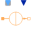

SourcePartial magnetic voltage or flux source |

|
Information
This information is part of the Modelica Standard Library maintained by the Modelica Association.
The source model provides a positive and negative magnetic port. Additionally this model contains a base icon and a definition of the angular frequency.
Connectors (2)
| port_p |
Type: PositiveMagneticPort Description: Positive magnetic port |
|
|---|---|---|
| port_n |
Type: NegativeMagneticPort Description: Negative magnetic port |
Extended by (4)
|  |
Modelica.Magnetic.QuasiStatic.FluxTubes.Sources Signal-controlled magnetic flux source |
|  |
Modelica.Magnetic.QuasiStatic.FluxTubes.Sources Source of constant magnetic flux |
|
SignalMagneticPotentialDifference Modelica.Magnetic.QuasiStatic.FluxTubes.Sources Signal-controlled magnetomotive force |
|
|  |
ConstantMagneticPotentialDifference Modelica.Magnetic.QuasiStatic.FluxTubes.Sources Constant magnetomotive force |